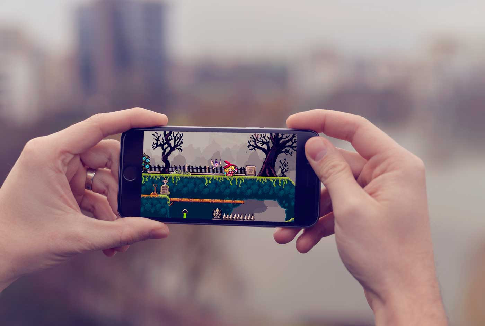

- Home
- >
- Portfólio
- >
- Sword of Unknow
Sword of Unknow
Descrição do projeto
Esse é um projeto pessoal no qual eu tenho muito orgulho de ter programado, apesar de não ter terminado. Sempre foi o meu sonho programar um jogo de plataforma do zero sem fazer o uso de ferramentas como Constructor, GameMaker ou Unity2D. Toda a engine do projeto está 80% pronta. Só ficou faltando programar a inteligência artificial para chefes de fase.
Foi desenvolvido para por em prática minhas habilidades como programador de jogos.
Nesse projeto utilizei
técnicas avançadas de desenvolvimento como Bitmask AABB para colisão,
Steering Behaviors para inteligência artificial do inimigos, Parallax otimizado,
TiledBased com multiplas camadas e muita física.
As tecnologias empregadas no projeto foram Adobe AIR SDK, Starling Framework (GPU), a engine de fisica Nape e a linguagem de programação orientada a objetos Actionscript 3.0.
